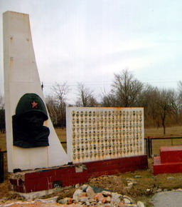
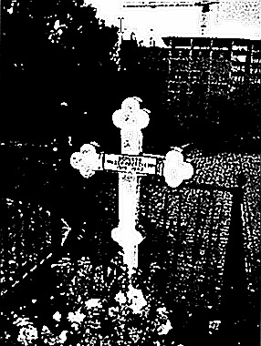
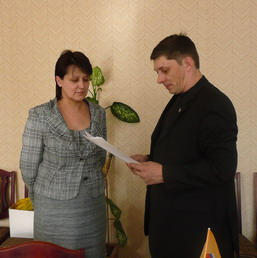
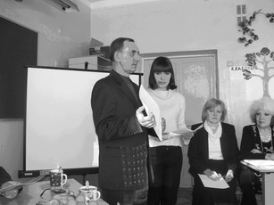
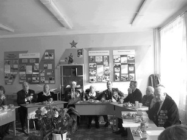

апрель 2009 года
КАК ЖИВО В ПАМЯТИ МОЕЙ ВСЕ, ЧТО Я УВИДЕЛА!
Мой отец часто напевал: «и никто не узнает где могила моя»…65 лет прошло, как он погиб, и все это время мы не могли посетить место его захоронения. Война отняла самого близкого нам человека, а наши власти ограничиваются минутой молчания в памятные даты и поднесением цветов к обелискам.
Сейчас дети погибших защитников Родины создают общественные организации для отстаивания прав памяти о погибших воинах. Благодаря созданному фонду «Жить и помнить» при постоянной поддержке Торгово-промышленной палаты, прежде всего, в лице ее председателя Л.М. Мусина постепенно, шаг за шагом «находятся» наши отцы, без вести пропавшие и перезахороненные.
Безграничная благодарность A.M. Тереньтеву и светлая память вице-президенту этого фонда Г.В. Харитонову, которые не жалея сил и времени занимались поисками информации о наших отцах, а теперь Александр Михайлович Терентьев продолжает эту работу, потому что эти люди с огромной душой и добрым сердцем.
19 декабря мой отец - Федоров Сергей Федорович погиб в 1943 г. на Украине. Как и многие члены нашей организации, я обратилась к A.M. Терентьеву, и он нашел необходимые данные для письма в администрацию тех мест, где похоронен мой отец. Я хотела узнать, есть ли это захоронение или оно было перенесено. Нам ответили, и я поехала на Украину. Не описать, какое чувство меня охватило, какие силы меня поддерживали; на душе было светло и радостно от того, что я могу прикоснуться к тому месту, где лежит прах моего отца.
Из Кировограда до села Верблюжки ехать автобусом около двух часов. Всматривалась в мелькавшие дороги, и мне представилось, как шли наши отцы-солдаты. Их пронизывал сильный ветер и обжигал ледяной дождь. Именно такая была погода, когда мы приехали. Это был центр села, и я увидела памятник погибшим воинам.
По обе стороны от памятника много фотографий погибших односельчан, слева и справа от центральной дорожки лежат плиты с фамилиями погибших воинов. На одной из них - фамилия моего отца.
Еще в извещении, которое мы получили в 1944 г., было написано, что Федоров С.Ф. похоронен близ дороги. Мемориал находится на просторном холме.
Председатель сельсовета Люба рассказала и показала мне, где проходила линия фронта, что есть еще три братских захоронения. Сколько же полегло наших дедов и отцов только в одном этом местечке!
Как живо в памяти моей все, что я увидела. Наконец-то душа моя успокоилась, но я обязательно вернусь в те места хотя бы через год. Мемориал находится в стадии реставрации. Я надеюсь, к моему приезду, все будет красиво.
Панова Валентина Сергеевна |

МОГИЛА У ХРАМА
Разыскиваем родственников Федора Алексеевича БЕЛЯКОВА (1919 – 1942), уроженца деревни Десна Молоковского района Тверской области.
В 1942 году в Коломягах (исторический район на севере Санкт-Петербурга), у входа в храм Св. Дмитрия Солунского появилась могила Федора Алексеевича Беляков (1919-1942). До сих пор она служит источником многочисленных легенд. По одной из версий, которой придерживаются в церкви, во время войны недалеко от этого места упал самолет. Летчик умер в госпитале и завещал похоронить его у коломяжской церкви. По другой - тело погибшего летчика подобрали местные жители и принесли на паперть храма, а затем, по всей видимости, было принято решение похоронить его здесь же, где защитник города закончил свой жизненный путь.
Со временем, особенно после войны, могила летчика стала почитаемой коломяжцами военной святыней. Почти у каждого в Ленинграде были родные, не вернувшиеся с войны, похороненные за сотни и тысячи километров от родного дома, а то и вовсе пропавшие без вести. В память о них, лишенных последнего пристанища на родной земле, люди приносили цветы на могилу летчика возле коломяжской церкви. Для коломяжцев и многих прихожан церкви Св. Дмитрия Солунского Федор Беляков стал собирательным образом павшего защитника Отечества. Его могила окружена заботой, любовью и вниманием. Традиция эта продолжается по сей день.
История захоронения у храма заинтересовала экскурсовода из Санкт-Петербурга Татьяну Пушенко. Занимаясь прокладкой нового экскурсионного маршрута, проходящего рядом с этим местом, она попыталась выяснить, кто же, на самом деле, похоронен у церкви, и обратилась за помощью в наш Фонд.
После трех месяцев розыска мы имеем веские основания утверждать, что в Коломягах похоронен наш земляк Федор Алексеевич Беляков.
Федор Алексеевич родился в 1919 году в деревне Десна Делединского сельсовета Молоковского района Калининской области. В декабре 1939 года был призван на действительную военную службу. Не исключено, что участвовал в советско-финской войне 1939-1940 годов. В период Великой Отечественной войны - старший сержант, командир отделения связи 30 артиллерийского полка 10 стрелковой дивизии, с 1942 года член ВКП(б). По донесению Управления 10 стрелковой дивизии № 4/0123 от 20 ноября 1942 г. был убит 15 ноября 1942 г. и похоронен в Коломяги Ленинградской области. Согласно записи в Книге Памяти Молоковского района Тверской области, Федор Алексеевич захоронен в деревне Коломяги Новгородской области.
Проверкой в 4 отделе военного комиссариата Новгородской области было установлено, что на их территории деревни с таким названием нет, в списках захороненных на территории области Беляков Ф.А. не значится. А на днях пришел ответ на наш запрос от руководителя Фонда поисковых отрядов Ленинградской области Ильи Прокофьева: «Уважаемые коллеги! В компьютерной базе данных на погибший личный состав ВВС Ленинградского фронта (а также и других авиасоединений, которые могли быть использованы в этом районе) Белякова Федора Алексеевича нет. Могил летчиков тоже в Коломягах нет. А вот 10 стрелковая дивизия как раз и была в этом районе, причем подразделения 30 артполка дислоцировались в районе Коломяг». Стало ясно, что наши предположения о том, что в Коломягах захоронен наш земляк, уроженец Калининской области Федор Алексеевич Беляков полностью подтвердились.
Мы просим откликнуться родственников Федора Алексеевича, чтобы более подробно рассказать им о его фронтовой судьбе и помочь связаться с людьми, которые ухаживают за могилой.
Александр Терентьев,
ответственный секретарь Фонда «Жить и Помнить»
|
ИЩЕМ И НАХОДИМ
В феврале в Фонд «Жить и Помнить» обратилась ученица 38 школы города Твери Алена Забродина с просьбой разыскать сведения о фронтовой судьбе, месте гибели и захоронения участника Великой Отечественной войны ГРОМОВА Александра Николаевича, 1909 года рождения, уроженца Воскресенского района Башкирии.
Было установлено, что красноармеец 436 отдельного саперного батальона Громов А.В. воевал и погиб на Тверской земле. Согласно записи в донесении Управления 375 стрелковой дивизии о безвозвратных потерях он был убит в бою 22 марта 1942 года и первично захоронен около деревни Фролово Ржевского района Калининской области. После окончания войны перезахоронен в братскую могилу в деревни Погорелки Ржевского района.
В канун Дня защитника Отечества в 38 школе прошло заседание круглого стола ветеранов 31 Армии, актива музея 31 Армии и членов патриотического клуба школы. Алене были переданы копии подлинных документов о судьбе солдата: лист донесения о безвозвратных потерях, страница Книги Памяти Республики Башкортостан, первые две страницы паспорта воинского захоронения, фотография братской могилы и выписка из списков захороненных.
1 марта 2009 года в Фонд поступило письмо от жительницы г. Вышний Волочек Галины Леонтьевой: «Не могу найти место захоронения моего деда, Котова Малофея Ефимовича. Призывался из деревни Красные Нивы Нелидовского района Калининской области. В книге памяти Нелидовского района его нет.» На следующий день 2 марта в Вышний Волочек ушел наш ответ: «Сообщаем, что командир взвода отдельной разведывательной роты 178 стрелковой дивизии Котов М.Е. был убит в бою 11 апреля 1943 года, тело погибшего было оставлено на поле боя в р-не сев.-зап. 600 м дер. Заметино Ярцевского района Смоленской области. Согласно сведениям Книги Памяти Смоленской области М.Е. Котов был перезахоронен на воинском мемориале в пос. Яковлево Ярцевского района Смоленской области». 23 марта по просьбе Фонда депутат городской думы г. Вышний Волочек Алексей Завьялов передал Галине Леонтьевой пакет документов о фронтовой судьбе ее деда, а в электронной Книге Памяти Тверской области было увековечено его имя.
В феврале месяце в Фонд «Жить и Помнить» поступило 128 обращений от жителей Твери, Тверской области и других регионов России, граждан Беларуси, Украины, Казахстана, Литвы и Эстонии. Получены запросы о розыске сведений о фронтовых судьбах, местах гибели и захоронения погибших и пропавших без вести защитниках Отечества от шести общественных организаций. Наибольшее количество писем пришло из Москвы, Санкт-Петербурга, городов Сибири и Дальнего Востока. |
|
|